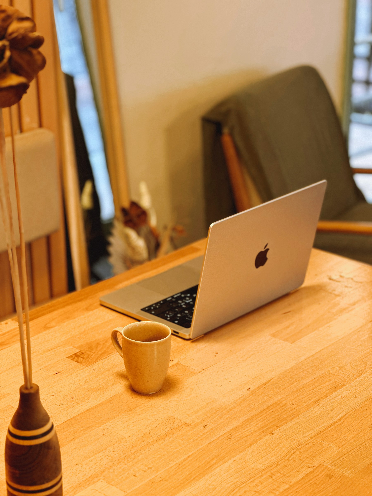

01 / INTRODUCTION만들고, 검증하며 배우는 사람
한양대학교 ERICA 인공지능학과
윤세훈Sehun Yoon
AI로 제품을 만들고,
판단의 기준을 세웁니다.
FDE · Product Engineer 지향
02 / WHAT I CARE ABOUT관심 있는 문제
어떤 문제를 풀고 싶냐면요.
흩어진 자료도,
AI가 만든 결과도.
사람이 읽고, 확인할 수 있게 만듭니다.
PiecePool에서는 자료를 위키로 연결하고,
OmniGuard에서는 위험 판단을 검증했습니다.
 PIECEPOOL / 실제 프로젝트 자료
PIECEPOOL / 실제 프로젝트 자료03 / HOW I WORK접근과 에이전트 협업
저는 이렇게 만듭니다.
문제를 정하고.
AI와 만들고.
다시 검증합니다.
구현에는 AI 에이전트를 활용하고,
설계·평가·통합의 기준을 세웁니다.
01문제 정의
02구현·통합
03실행·검증


04 / WHAT I’VE BUILT작업과 결과
맡은 역할과 함께 남긴 작업들.
작업으로
저를 설명합니다.
- 말똥5인 팀장 · SUMTECH 최우수상
- PiecePool자료 인입·위키 엔진·품질 측정
- OmniGuardPM · 실험 설계·모델 평가
수상과 함께 시연·파일럿의 한계도 기록합니다.
05 / WHAT’S NEXT배운 것, 앞으로의 방향
더 잘 판단하는 엔지니어로.
만든 결과를,
제 말로 설명할
수 있도록.
사용자와 제품을 함께 키우는 PE,
고객의 업무에서 해법을 찾는 FDE를 지향합니다.